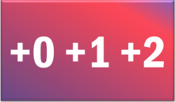

Subjects and Objects: the essentials
What is the difference?
 |
In the English sentences:
we only know who did what to whom by the order of the words. The subject comes first in both sentences so we know that is the doer of the action. The object follows the verb so we know that is the receiver of the action. If we reverse the order, we reverse the sense. |
| In sentence 1 | the man is the subject of the verb kiss | the woman is the object of the verb |
| In sentence 2 | the woman is the subject of the verb kiss | the man is the object of the verb |
Usually, of course, we can understand what is the subject and what is the object of a verb by the meaning of the sentence:
- Peter drank the water
Cannot (sensibly) be changed to:
- The water drank Peter
Here's a little test.
Identify the subjects and the objects of the verbs in this story and
then click on the story for the answers.
|
|
Notice that:
|

In grammar books, you will often see the term nominative
(case) to refer to the subject and accusative (case)
to refer to the object. Most learners of English don't
need to understand these terms (but you do).
We have now identified two of the three cases in
English (the third is the possessive or genitive which does not concern
us here).
 |
Other languages do things differently |
Languages which show case structure
If you speak some German, the following will be familiar to you:
- Der Mann küsste die Frau
- Die Frau küsste den Mann
Sentences 5 and 6 are direct translations of sentences 1 and 2.
Notice, however, that there is subtle difference: the definite article
for the man changes from der to den in sentence 2.
This is because German is one of many languages which distinguishes
between cases by changing the form of words. It can also change
the form of adjectives and nouns to reflect the case. In this
example, the article for the woman is the same in both cases.
The second thing to note is that reversing the word order does
not reverse the meanings of the sentences:
- Die Frau der Mann küsste
- Den Mann die Frau küsste
A German speaker might be mildly surprised by the word-order change but under no illusions about who did what to whom because the accusative form of the article is intact so we know that the man is the object in sentence 8 and it was she who did the kissing.
Exactly the same thing is possible in a whole range of languages including other Germanic languages, Slavic languages, Greek and so on. Some of these languages have very free ordering of elements of the clause because the changes to nouns, articles and so on tell us what the subject and object of the verb are.
 |
Word order |
In the example above, German, the word order is more or less the same
as in English. That is Subject + Verb + Object. Not all
languages are so accommodating. However, of the world's languages
(especially the larger ones), 75% are either Subject + Object + Verb or,
like English, Subject + Verb + Object.
Here's a very short list to show what is meant. All languages can
vary the word order for poetic effect, to show questions and so on but
this is the usual ordering.
| Usual word order | Languages | Example |
| Subject + Verb + Object | *Arabic Chinese languages Czech, Polish, Russian and most Slavic languages Danish, Norwegian, Swedish and related languages English *German Greek Indonesian French, Spanish, Italian and other Italic languages Thai |
I love you |
| Subject + Object + Verb | Basque Bengali Farsi Hindi Hungarian †Japanese Korean Punjabi Turkish Urdu Welsh |
I you love |
| *also Subject + Object + Verb (I you love) | †also Object + Subject + Verb (You I love) | ||
Why does this matter to English language teachers?
Think for a moment and then click here.
- It highlights the need to focus very clearly on word order. It is often word order alone which distinguishes the meaning of the sentence pairs in English and that may come as a surprise to many learners.
- If you know how your learners' first languages operate in regard to case, it makes teaching things like pronouns much more straightforward.
- A knowledge of case grammar will allow you to analyse language for your students and make relationships clear to them. (It will also make clear the difference between who and whom.)
 |
Identifying the true Object |
Students (and some teachers) can be confused by sentences such as
He said the brakes were worn, thinking that the brakes is
the object of the verb said. It isn't and say is
usually intransitive, by the way.
The
situation is slightly complex but for the purposes of this guide
remember that objects in English are always either nouns (or noun
phrases) or pronouns. In these sentences, the true objects are
in
red. There is a description of the other items which are
called complements.
- The boy kicked the cat.
- The boy jumped over the fence. (prepositional phrase complement, not the object)
- She came early. (adverb complement, not the object)
- The man told a tall story.
- He is feeling extremely ill. (adjectival complement, not object)
- He is feeling the material's texture.
- He called me.
- He spoke to me. (prepositional phrase complement, not the object)
|  |
Intransitivity Transitivity and Ditransitivity |
We saw above that some verbs do not take an object and some do. Many verbs can do both (and sometimes change their meaning in one case or the other).
- Verbs like come and go in English never take and object (they are always intransitive).
- We can say
He came to the party
I came over the hill
She came to talk to me
etc. but we cannot have
*I came the party
*She came the hospital
* We came the beach
etc. We can say
I go on Thursdays
I went to the party
I will go now
but not
*I go London
I went the school
I will go the lesson etc. - Verb like take, enjoy and buy in English always take an object (they are always transitive). When they only have one object, they are described as monotransitive. The objects are in red in these examples.
- We can say
She took the medicine
They took it away from me
We took the bus to London
etc. but things like
*He took
*They take
*Mary took
etc. are not usually possible.
We can say
I bought a ticket
She'll buy a new car
They buy cigarettes there
etc. but
*They buy
*She bought
*I'll be buying
etc. are not usually possible.
(Note that even when we leave out the object as in something like
It's OK. I'll buy!
we are still using the verb transitively because we have the object [the drinks, the food etc.] in our heads.) - Verbs like eat, smoke, and leave, can be used with an object (transitively) or without (intransitively).
- We can say
I ate early
and
I ate the fish
She smokes
and
She smoked a cigar - Transitive verbs, like ask, give, owe and pay can take two objects (they are ditransitive). In the following, the direct object is in red and the indirect object is in black.
- We can say
I asked a question
and
I asked him a question
I gave the money away
and
I gave the money to John
I owe €500
and
I owe her €500
I paid $400
and
I paid him $400 etc.
With ditransitive verbs, there are two objects: a direct object which must be present and an indirect object which usually comes first and may be present. The direct object in
John asked me a question
is a question and me is the indirect object.
A simple test to see which is which is to remove one of them and see if the sentence still makes the same sense. If it does, you have removed the indirect object.
One thing to be aware of is that the analysis here refers to English.
Languages vary in how transitivity works and that can cause all sorts of
error such as:
*I enjoy very much (enjoy is always
transitive)
*I arrived the hotel (arrive is
always intransitive)
*I directed him the station (direct is
always monotransitive, never ditransitive)
The key terms and concepts you have learned in this guide are: subject, direct object, indirect object, nominative, accusative, transitive, intransitive, ditransitive, case.
You have also learned how to identify the subject and the object of a verb and distinguish it from other ways to end the sentence.
For information, here's a classified list of some common verbs:
| generally transitive | usually intransitive | transitive and intransitive | can be ditransitive |
| ask attend believe buy consider contact describe discuss emphasise enjoy find join lay like lose love make need raise receive take telephone use want watch |
appear arrive come cough die disappear fall happen lie live rain rise sneeze snow wait work |
break
close drive drop eat end enter explode finish fly leave manage call read smoke turn type win write These verbs often have a slightly
different meaning in the two uses and take different sorts of
subjects. Compare, e.g.: |
ask bring charge find give hand leave lend make offer owe pay promise save send serve show teach tell wish |
| Related guides | |
| verb and clause types | for a more advanced guide to the area |
| word order | an essential guide only with links to more technical guides |
| case | a more technical guide to case in English |
References:
Chalker, S, 1987, Current English Grammar, London: Macmillan
Campbell, GL, 1995, Concise Compendium of the World's Languages,
London: Routledge
Mallinson, G and Blake, BJ, 1981, Language typology: crosslinguistic
studies in syntax, Amsterdam: North-Holland Linguistic Series
Quirk, R, Greenbaum, S, Leech, G & Svartvik, J, 1972, A Grammar of
Contemporary English,
Harlow: Longman
Swan, M and Smith, B (Eds), 2001, Learner English, 2nd Edition,
Cambridge: Cambridge University Press